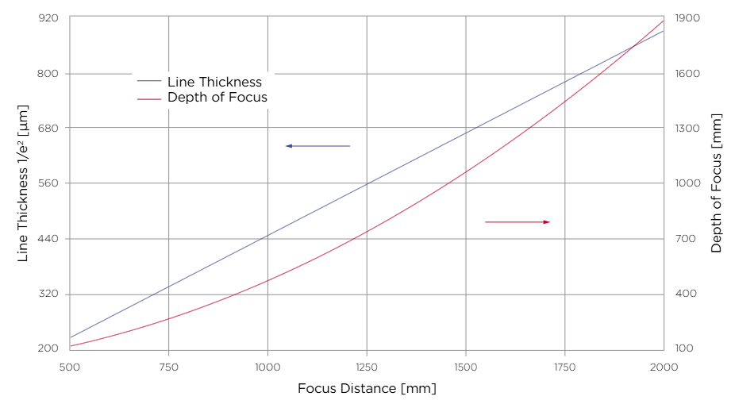
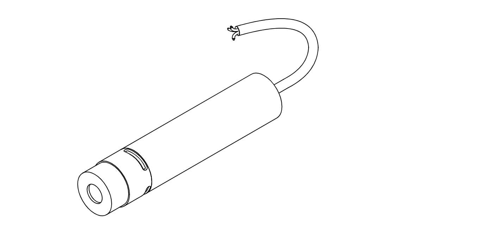
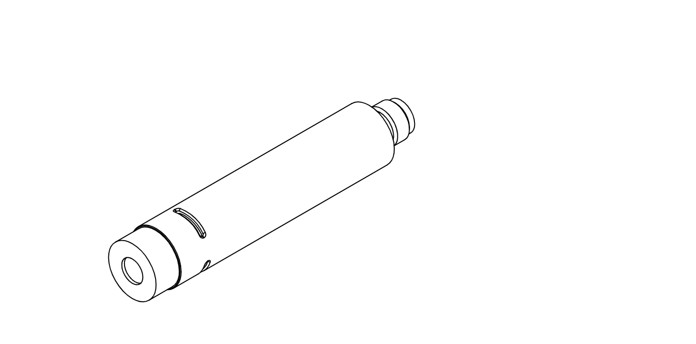
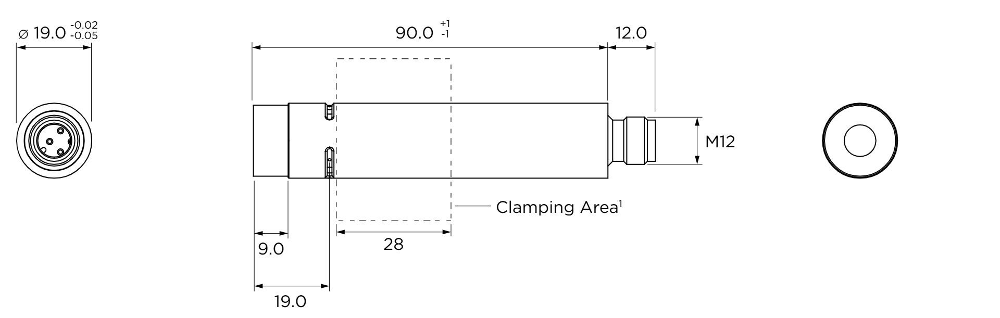
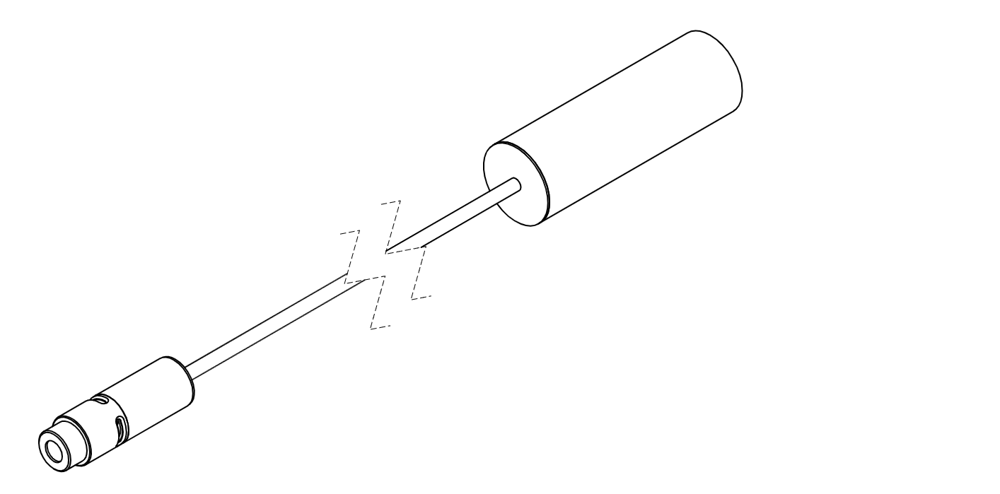
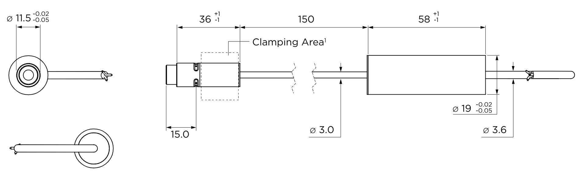
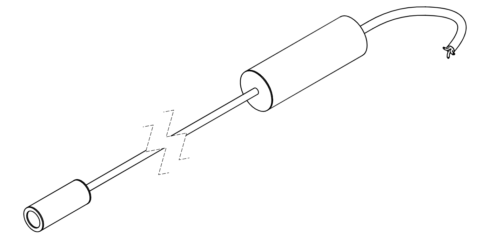

BIS ZU 5-FACH HÖHERE SPITZENLEISTUNG IN DERSELBEN LASERKLASSE.
Hohe Lichtintensität und damit hohe Laserleistung ist in vielen Anwendungen der industriellen Bildverarbeitung ein entscheidender Faktor. Beim Einsatz von Laserlicht können die Vorgaben der Laserklassen jedoch eine Einschränkung darstellen.
Laserhersteller klassifizieren ihre Laser im Dauerstrichbetrieb (cw), der in Kombination mit einer Kamera nicht die übliche Betriebsart ist. Die Pulssteuerung kann die Lasersignale mit der Kamera synchronisieren, sodass eine bis zu 5-fach höhere Spitzenleistung (im Vergleich zum cw-Betrieb) erreicht wird, ohne die Laserklasse zu verlassen.
Der MVpulse (2025) ist in 5 Wellenlängen (450 – 785 nm) mit Spitzenleistungen bis 100 mW erhältlich. Verschiedene Öffnungswinkel (5–90°) ermöglichen die gewünschte Linienlänge, und sechs verschiedene Optikoptionen bieten die passende Kombination aus Linienbreite und Tiefenschärfe für Ihre Anwendung. Die Module sind mit fixem oder einstellbarem Fokus in verschiedenen Gehäusen erhältlich: Standard oder 2H (zwei separate Gehäuse – eines für die Optik mit der Laserdiode, das andere für die Elektronik).
MERKMALE
Sichere Laserklassen, sodass keine Schutzausrüstung erforderlich ist (einstellbar auf Laserklasse 2 oder 3R)
Hohe Pulsleistung bei geringer mittlerer optischer Leistung
Hohe Ausgangsleistung für kontrastreiche Bilder und höhere Genauigkeit
Pulssteuerung durch integrierten Mikrocontroller
ANWENDUNGEN
3D-Triangulation
3D-Laserscanner
Industrielle Inspektion
Strukturierte Beleuchtung
Datum12.02.2026Rev0
www.blauoptoelektronik.de
Seite 1 von 14
Datenblatt
FP-MVpulse-25
Produktbeschreibung
Das MVpulse-Lasermodul verbindet zwei Kriterien: Viel Licht, mit Ausgangsleistungen bis 100 mW, unter Beibehaltung von Laserklasse 2.
Das BLAU MVpulse-Lasermodul verbindet zwei Kriterien der industriellen Bildverarbeitung: Helles Licht mit Ausgangsleistungen bis 100 mW und Augensicherheit nach Laserklasse 2.
Hohe Ausgangsleistungen für kontrastreiche Bilder
Hohe Ausgangsleistungen sind in der industriellen Bildverarbeitung nötig, um ein kontrastreiches Bild zu schaffen, was eine detaillierte Auswertung möglich macht. Dieses Licht muss allerdings nur dann zur Verfügung stehen, wenn die Kamera des IVB-Systems eine Aufnahme macht.
Verfügbare Wellenlängen
Das Modul ist in den Wellenlängen 450 nm, 520 nm, 640 nm, 660 nm und 785 nm verfügbar.
Präzise Synchronisation
Die Elektronik des Lasermoduls stimmt Aufnahmefrequenz und Beleuchtungspulse so aufeinander ab, dass hohe Ausgangsleistungen auch ohne aufwändige Schutzvorrichtungen möglich sind. Abhängig von der gewünschten Laserklasse liefert das BLAU MVpulse bei Pulslängen zwischen 15 ms und 0,38 ms Ausgangsleistungen von 10 mW bis 100 mW.
10 - 100 mW
Ausgangsleistung
5x
Spitzenleistung gegenüber cw-Betrieb in gleicher Laserklasse
640nm, 660nm, 785nm: 4,5 - 30 V | 450nm, 520nm: 10 - 30 V
Stromverbrauch
< 200 mA bei 5 V (Versorgungsstrom)
Betriebstemperatur
450nm, 520nm, 640nm: 0°C bis +50°C 660nm, 785nm: 0°C bis +60°C (Gehäusetemperatur)
Lagertemperatur
-20°C bis +60°C
Modulation
digital, high/low-aktiv, 0 - 20 kHz, Pulslänge und Tastverhältnis begrenzt low = 0 V, high = 5 V, Eingangsimpedanz 10 kOhm bei 5 V
Leistungsstabilität
≤ 5 % bei 25°C (nach Aufwärmphase)
Erhöhung der Spitzenleistung gegenüber cw-Betrieb in gleicher Laserklasse
5x bei Pulslänge < 0,38 ms, Pausenzeit zwischen den Pulsen > 1,52 ms, 4x bei Pulslänge < 0,9 ms, Pausenzeit zwischen den Pulsen > 2,7 ms, 3x bei Pulslänge < 2,9 ms, Pausenzeit zwischen den Pulsen > 5,8 ms 2x bei Pulslänge < 15 ms, Pausenzeit zwischen den Pulsen > 15 ms höhere Frequenzen auf Anfrage
Temperaturkoeffizient der Wellenlänge
< 0,25 nm/K
Ausgangsleistung
[mW] · Spitzenleistung
Visualisierung der Ausgangsleistung
Datum12.02.2026Rev0
www.blauoptoelektronik.de
Seite 3 von 14
Datenblatt
FP-MVpulse-25
02
Optische Eigenschaften
Strahlcharakteristik
Laserlinie mit homogener Leistungsverteilung
Fokusabstand
F: fokussierbar mit Stiftwerkzeug (Details siehe Bedienungsanleitung) FYYY: werkseitig auf YYY mm vorfokussiert, weiterhin fokussierbar FIXYYY: fester Fokus auf YYY mm
± 20 % (± 10 % optional) bezogen auf die mittlere Leistung (innerhalb von 80 % der Linie)
Geradheit
± 0,1 % (± 0,05 % optional)
Öffnungswinkel
5°, 10°, 15°, 20°, 30°, 45°, 60°, 75°, 90°
Homogenität
Schematisch · nicht maßstäblich
Liniendicke
STDDLDLEDLSETS1TS2
Geradheit
± 0,1 % (± 0,05 % optional)
Datum12.02.2026Rev0
www.blauoptoelektronik.de
Seite 4 von 14
Datenblatt
FP-MVpulse-25
03
Spezifikationen
FLEXPOINT® MVpulse SERIE (2025)
Wellenlänge [nm]
450
520
640
660
785
Modell
Linienlaser mit homogener Leistungsverteilung (FOV-Korrektur erhältlich)
Wellenlängentoleranz (typ.) [nm]
±10
±10
±5
±5
±10
Ausgangsleistung (max. Spitzenleistung) [mW]1
10 – 80
10 – 80
10 – 100
10 – 100
10 – 100
Leistungsstabilität bei 25 °C (nach Aufwärmphase) [%]
≤ 5
Versorgungsspannung [VDC]
10 – 30
4.5 – 30
Stromverbrauch [mA]
< 200 bei 5 VDC
Betriebstemperatur (Gehäusetemp.) [°C]2
0 bis +50
0 bis +50
0 bis +50
0 bis +60
0 bis +60
Erhöhung der Spitzenleistung gegenüber cw-Betrieb in gleicher Laserklasse
5x bei Pulslänge < 0.38 ms, Laser-Pausenzeit zwischen den Pulsen > 1.52 ms 4x bei Pulslänge < 0.9 ms, Laser-Pausenzeit zwischen den Pulsen > 2.7 ms 3x bei Pulslänge < 2.9 ms, Laser-Pausenzeit zwischen den Pulsen > 5.8 ms 2x bei Pulslänge < 15 ms, Laser-Pausenzeit > 15 ms
Öffnungswinkel [°]3
5, 10, 15, 20, 30, 45, 60, 75, 90
Fokussierbereich [mm]
50 – 5000
Homogenität (typ.) [%]4
±20 bezogen auf die mittlere Leistung (innerhalb von 80 % der Linie)
Geradheit [%]4
±0.1 (±0.05 optional)
Punktstabilität [μrad/K]
≤ 10 (verbesserte Punktstabilität optional)
Strahlrichtungsfehler [mrad]
≤ 10 (≤ 3 optional)
Lagertemperatur [°C]
-20 bis +60
Modulation
Digitale Modulation 0 – 20 kHz (0 – 1 MHz auf Anfrage), digital High- oder Low-aktiv, Low = 0 V, High = 5 V, Eingangsimpedanz 10 kOhm bei 5 V
Gehäuse
Aluminium (blau eloxiert, potentialfrei) ST (Standard) oder 2H (separate Gehäuse für Optik und Elektronik)
Anschluss
Offene Litzen (Länge 500 mm): Braun: +VDC, Schwarz: MOD (digitale Modulation), Blau: GND M12-Steckverbinder auf Anfrage
Laserklasse
Werkseitig auf Laserklasse 2 oder 3R eingestellt (IEC 60825-1:2014, EN60825-1:2014+A11:2021)
Erhältliches Zubehör (optional, separat zu bestellen)
Halterung; Netzteil für 5 V (≥ 640 nm); Netzteil für 12 V mit M12-Steckverbinder
Fußnoten 1 Die Ausgangsleistung ist definiert als die vom Lasermodul emittierte Laserleistung 2 Kondensatbildung ist zu vermeiden (wegen optischer und elektronischer Komponenten) 3 Öffnungswinkel: definiert durch die Enden der Laserlinie mittels FWHM, bezogen auf die mittlere Leistung (innerhalb von 80 % der Linie) 4 Homogenität und Geradheit werden bei 80 % des Öffnungswinkels gemessen
Datum12.02.2026Rev0
www.blauoptoelektronik.de
Seite 5 von 14
Datenblatt
FP-MVpulse-25
04
Puls- und Überwachungsfunktionen
Die Pulsspitzenleistung kann gegenüber der maximalen mittleren Dauerstrichleistung um den Faktor 2/3/4/5 erhöht werden, während der Laser weiterhin innerhalb der Grenzwerte der Laserklasse 2 bzw. der Laserklasse 3R bleibt. Mit steigender Pulsspitzenleistung muss die maximale Pulslänge begrenzt werden.
Die folgende Darstellung zeigt, wie die Pulsspitzenleistung bis an die Grenzwerte der Laserklasse 2 erhöht werden kann und wie sich Pulslänge und minimale Pausenzeit entsprechend ändern.
Originaldiagramm, Beschriftung englisch: Laser Class Limit = Laserklassengrenze · Pulse Factor = Pulsfaktor · Continuous Wave = Dauerstrich · Relative Power = relative Leistung · Pulse length = Pulslänge · Min. off-time = min. Pausenzeit
Pulserhöhungsfaktor gegenüber cw
5x
4x
3x
2x
Max. Pulslänge [ms]
0.38
0.9
2.9
15
Min. Laser-Pausenzeit [ms]
> 1.52
> 2.7
> 5.8
> 15
Datum12.02.2026Rev0
www.blauoptoelektronik.de
Seite 6 von 14
Datenblatt
FP-MVpulse-25
04
Puls- und Überwachungsfunktionen
Das folgende Diagramm zeigt den Zusammenhang zwischen Pulserhöhungsfaktor, maximaler Pulslänge und minimaler Pausenzeit. Es gilt sowohl für Laserklasse 2 als auch für Laserklasse 3R.
Originaldiagramm: max pulse time = max. Pulslänge · min off time = min. Pausenzeit · Pulse Increase Factor = Pulserhöhungsfaktor
Die Treiberelektronik des MVpulse (2025) überwacht und steuert die Pulsmodulation automatisch. Legt der Anwender am Modulationseingang ein höheres Tastverhältnis oder eine längere Pulslänge an, die zu einer Überschreitung der Laserklasse führen würde, ignoriert die Treiberelektronik das Signal und begrenzt die Ausgangsleistung, sodass die angegebene Laserklasse eingehalten wird. Siehe die Beispiele unten.
Originaldiagramm: Modulation Signal = Modulationssignal · Laser Output = Laserausgang · Laser Output Cut by Pulse Control = Laserausgang durch Pulssteuerung begrenzt · Time = Zeit
Datum12.02.2026Rev0
www.blauoptoelektronik.de
Seite 7 von 14
Datenblatt
FP-MVpulse-25
04
Pulssteuerung
FP-MVpulse-25
Laserklassengrenzen und Pulsfaktoren
Modulationssignal und Laserausgang
Originalgrafik: modulation signal = Modulationssignal · laser output = Laserausgang · laser output cut by pulse control = Laserausgang durch Pulssteuerung begrenzt · time = Zeit
Datum12.02.2026Rev0
www.blauoptoelektronik.de
Seite 8 von 14
Datenblatt
FP-MVpulse-25
05
Fokusoptionen
Liniendicke und Tiefenschärfe (DOF) der Standard-Fokusoption (STD) bei 660 nm
Kennlinien der Standard-Laserlinie (Nahbereich)

Kennlinien der Standard-Laserlinie (Fernbereich)
Originaldiagramme: Line Thickness = Liniendicke · Depth of Focus = Tiefenschärfe · Focus Distance = Fokusabstand
MVpulse-(2025)-Laser sind mit verschiedenen Fokusoptionen erhältlich, um die passende Kombination aus Liniendicke und Tiefenschärfe für die Anwendung zu erreichen.
Zur Berechnung von Liniendicke und Tiefenschärfe lesen Sie den Wert aus den obigen Diagrammen ab und multiplizieren ihn mit dem Faktor für die gewünschte Wellenlänge, Ausgangsleistung und Fokusoption aus der folgenden Tabelle.
Pout und λ
Fokusoptionen (Umrechnungsfaktor bezogen auf den rot markierten Standardlaser)
ST-F/ST-FIX: Ø19x90 mm 2H-F: Ø11,5x36 mm (Optik) + Ø19x58 mm (Elektronik), verbunden durch 150 mm Kabel 2H-FIX: Ø11,5x29 mm (Optik) + Ø19x58 mm (Elektronik), verbunden durch 150 mm Kabel
Anschlussbelegung
offene Litzen: +VDC (braun), MOD (schwarz), GND (blau) (M12-Steckverbinder auf Anfrage)
Laserklasse
2 (IEC 60825-1:2014, EN 60825-1:2014+A11:2021)
Abmessungen
maßstäblich · mm
Visualisierung der Abmessungen · Kabel verkürzt dargestellt
Anschlussbelegung
schematisch · nicht maßstäblich
Datum12.02.2026Rev0
www.blauoptoelektronik.de
Seite 10 von 14
Datenblatt
FP-MVpulse-25
07
Technische Zeichnung
MVpulse 25 ST-F
MVpulse (2025) mit einstellbarem Fokus und Standardgehäuse (ST-F)
Maße in mm

MVpulse 25 ST-F-M12
MVpulse-25 mit einstellbarem Fokus, Standardgehäuse (ST-F) und M12-Steckverbinder (auf Anfrage)
Maße in mm


Clamping Area1 = Klemmbereich. 1Für eine optimale Wärmeabfuhr in einer Halterung empfehlen wir, Wärmeleitpaste auf die Kontaktfläche aufzutragen. Maße in mm
Datum12.02.2026Rev0
www.blauoptoelektronik.de
Seite 11 von 14
Datenblatt
FP-MVpulse-25
07
Technische Zeichnung
MVpulse 25 ST-FIX
MVpulse (2025) mit fixem Fokus und Standardgehäuse (ST-FIX)
Maße in mm
MVpulse 25 2H-F
MVpulse (2025) mit einstellbarem Fokus und 2 Gehäusen (separate Gehäuse für Optik und Elektronik) (2H-F)
Maße in mm


Clamping Area1 = Klemmbereich. 1Für eine optimale Wärmeabfuhr in einer Halterung empfehlen wir, Wärmeleitpaste auf die Kontaktfläche aufzutragen. Maße in mm
Datum12.02.2026Rev0
www.blauoptoelektronik.de
Seite 12 von 14
Datenblatt
FP-MVpulse-25
07
Technische Zeichnung
MVpulse 25 2H-FIX
MVpulse (2025) mit fixem Fokus und 2 Gehäusen (separate Gehäuse für Optik und Elektronik) (2H-FIX)
Maße in mm

Clamping Area1 = Klemmbereich. 1Für eine optimale Wärmeabfuhr in einer Halterung empfehlen wir, Wärmeleitpaste auf die Kontaktfläche aufzutragen. Maße in mm
08
Sicherheits- und Handhabungshinweise
Gefährdung von Personen
Je nach Betriebsart emittieren diese Bauteile hochkonzentriertes, nicht sichtbares Infrarotlicht, das für das menschliche Auge gefährlich sein kann. Für Produkte, in die diese Bauteile eingebaut werden, sind die Sicherheitshinweise der IEC 60825-1 »Sicherheit von Lasereinrichtungen« einzuhalten.
Hinweise zur Handhabung
Die Produkte unterliegen den üblichen Risiken empfindlicher elektronischer Bauteile, einschließlich elektrostatischer Entladung, Spannungsspitzen und Überlastung.
RoHSkonform
Datum12.02.2026Rev0
www.blauoptoelektronik.de
Seite 13 von 14
Datenblatt
FP-MVpulse-25
09
Bestellschlüssel
FP-MVpulse-25
Gehäuse
X
ST
2H
Wellen- länge [nm]
X
450
520
640
660
785
Ausgangs- leistung [mW]
X
10 – 80
10 – 100
Modulation / Leistungs- einstellung
X
M | Digitale Modulation, low-aktiv
MI | Digitale Modulation invertiert, high-aktiv
Öffnungs- winkel [°]
X
5
10
15
20
30
45
60
75
90
Fokus [mm]
X
F | Fokus einstellbar
FYYY | Fokus werkseitig auf YYY mm voreingestellt, weiterhin einstellbar
FIXYYY | Fester Fokus auf YYY mm
Optik
X
STD
DL
DLE
DLSE
TS1
TS2
Laser- klasse
X
2
3R
Puls- erhöhungs- faktor
X
2x
3x
4x
5x
Beispiel: FP-MVpulse-25-ST-785-50M-30-F-DL-2-2x
Telefon +49 (0) 7551/93748-0 Telefax +49 (0) 7551/93748-29 E-MAIL info@blauoptoelektronik.de WEB www.blauoptoelektronik.de
GESCHÄFTSFÜHRER Dr.-Ing. Ingmar Blau, Dipl.-Ing. (FH) Eugen Romasew HANDELSREGISTER: Freiburg HRB 580681 UST-IDNR. DE 169489277 BANKVERBINDUNG Sparkasse Bodensee IBAN DE 40 6905 0001 0001 0270 28 BIC/SWIFT SOLADES1KNZ

![Pulslänge, Pausenzeit [ms] über Pulserhöhungsfaktor](assets/pulse-curve.png)